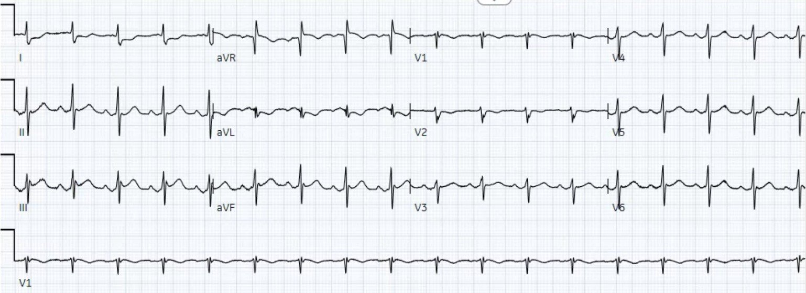
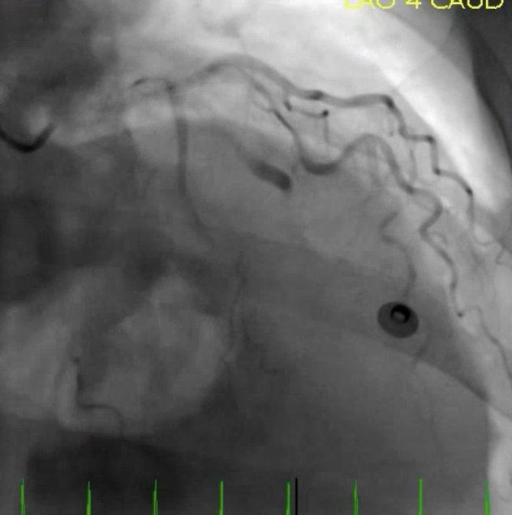
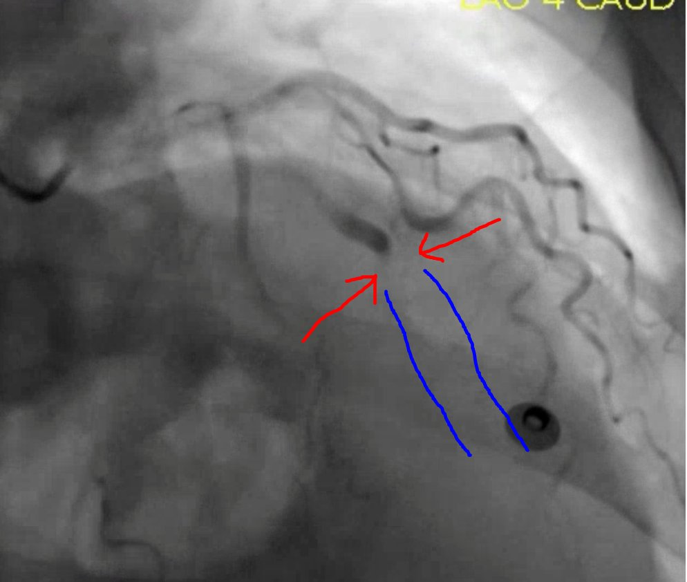
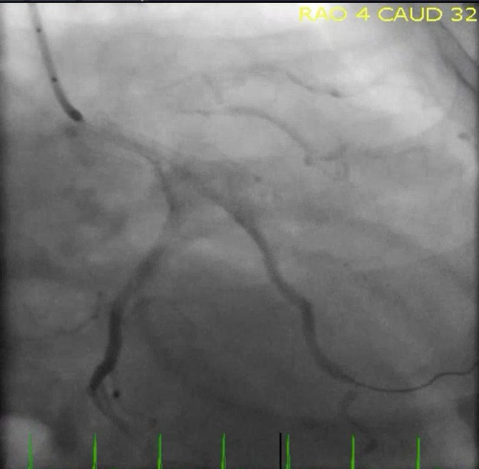
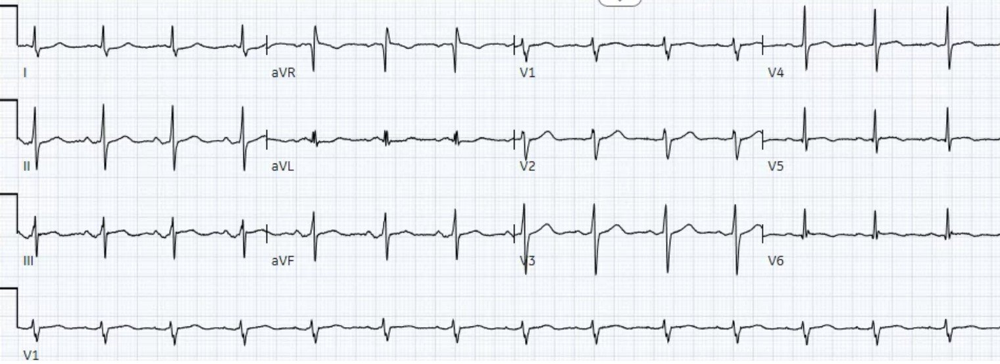
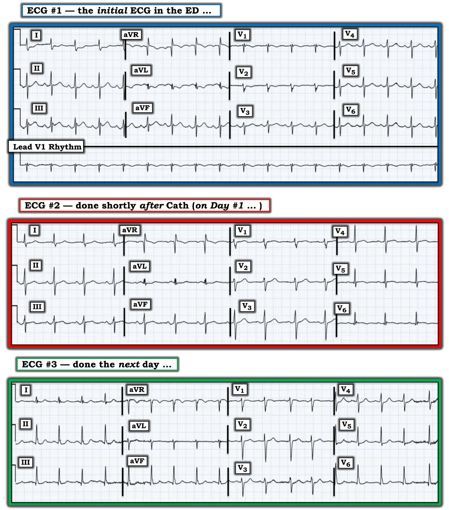
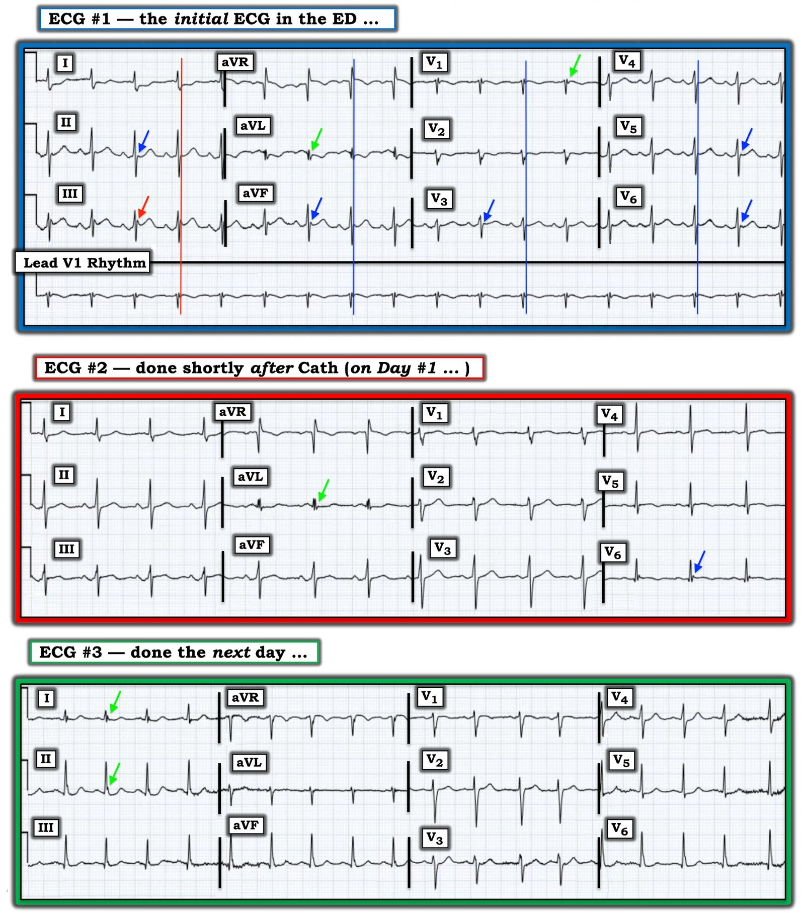

23/09/2020 — Một phụ nữ 60 mấy tuổi đau ngực kèm sóng J nổi bật
Bản dịch tiếng Việt của bài "A woman in her 60s with chest pain and prominent J waves" – Dr. Smith’s ECG Blog. Giữ nguyên toàn bộ 9 hình ảnh của bản gốc.
Ca bệnh do Dan Singer MD và Ryan Barnicle MD gửi, Pendell Meyers viết bài
Một phụ nữ 60 mấy tuổi có tiền sử hút thuốc lá đến khoa cấp cứu (ED) vì đau ngực trái lan ra cánh tay trái và lưng, khởi phát vào khoảng 1330. Bà mô tả cơn đau như cảm giác “nặng ngực”, không có yếu tố làm tăng hay giảm đau. Mức độ đau lúc đến viện là 10/10.
Đây là điện tâm đồ lúc phân loại (triage) của bệnh nhân (không có điện tâm đồ cũ để so sánh):


Các dấu hiệu:
– Nhịp xoang khoảng 100 lần/phút
– Phức bộ QRS nhìn chung bình thường
– ST chênh lên (STE) 1,0 mm ở chuyển đạo III, và chỉ thoáng chút STE ở aVF (cả hai đều phải đo ngay sau các sóng J đáng kể)
– ST chênh xuống (STD) và sóng T đảo ngược ở chuyển đạo I và aVL
– Gợi ý gần như có STD ở V2, kèm sóng T âm ở V2
Diễn giải:
Chẩn đoán xác định OMI STEMI âm tính (STEMI(-) OMI) thành dưới (và nhiều khả năng cả thành sau). Mặc dù sóng J (khía điểm J) thường được xem là một đặc điểm hình thái làm cho STE ít có khả năng là do OMI, chúng tôi đã có nhiều ví dụ về OMI kèm sóng J trên blog này (cũng giống như mọi quy tắc kinh nghiệm (rule of thumb) về điện tâm đồ khác mà bạn từng học). Nếu xem riêng lẻ các chuyển đạo dưới, tôi sẽ nghi ngờ thể tích bên dưới các sóng T, nhất là ở chuyển đạo III, nhưng tôi sẽ không chắc chắn 100% rằng chúng là sóng T tối cấp. Tuy nhiên, như thường lệ, chuyển đạo aVL giải quyết ca này, xác nhận OMI thành dưới: chuyển đạo aVL có phức bộ QRS hẹp bình thường, theo sau là STD và sóng T đảo ngược có thể tích lớn. Chuyển đạo aVL làm cho STE và sóng T ở chuyển đạo III cực kỳ có khả năng là do OMI. STD nhẹ và sóng T đảo ngược ở V2 ủng hộ chẩn đoán vì nhiều khả năng chúng biểu hiện sự lan rộng ra thành sau. Cũng lưu ý rằng có STE soi gương ở aVR (rất nhẹ và ở một mức độ nào đó là do trôi đường nền).
Các dấu hiệu này được Dr. Singer và Dr. Barnicle nhận ra ngay lập tức, và phòng thông tim (cath lab) đã được kích hoạt.
Các bác sĩ tim mạch đồng tình với mối lo ngại của họ và đưa bệnh nhân vào phòng thông tim ngay lập tức (rất lâu trước khi kết quả troponin T đầu tiên trả về dương tính ở mức 0,24 ng/mL). Mặc dù ca này không đáp ứng tiêu chuẩn STEMI, điều thú vị là các bác sĩ tim mạch lại ghi nhận đây là một STEMI (một số người không có cách nào khác để diễn đạt khái niệm OMI nên chỉ đơn giản dùng sai từ “STEMI” thay cho khái niệm OMI).
Họ phát hiện tắc hoàn toàn do huyết khối (TIMI 0) ở nhánh bờ tù thứ nhất (OM1), được mở thông thành công bằng một stent.






6 giờ sau, troponin đạt đỉnh 4,26 ng/mL.
Siêu âm tim ghi nhận EF 50% với giảm động nặng ở thành trước bên, đoạn giữa thành dưới bên và vùng mỏm bên.
Đây là hai điện tâm đồ được ghi ngay sau thông tim, rồi vào ngày hôm sau:


Bệnh nhân hồi phục tốt.
Những điểm cần học:
Trong đọc điện tâm đồ, không có quy tắc kinh nghiệm đơn lẻ nào có thể tin cậy được khi xét riêng rẽ.
Sóng J thường gặp nhất trong bối cảnh ST chênh lên biến thể bình thường, nhưng cũng có thể gặp trong OMI.
Chuyển đạo aVL vô cùng quý giá trong việc đọc OMI thành dưới.
Đọc điện tâm đồ ở trình độ chuyên gia giúp nhận diện và tái tưới máu OMI nhanh hơn so với tiêu chuẩn STEMI.

===================================
BÌNH LUẬN CỦA TÔI, bởi KEN GRAUER, MD (23/9/2020):
===================================
Tôi thấy đây là một ca bệnh hấp dẫn vì nhiều Lý do!
- Lý do #1: Dr. Singer, Barnicle và Meyers đều chẩn đoán OMI cấp chủ yếu dựa trên ST-T chênh xuống soi gương ở chuyển đạo aVL — chứ không phải dựa vào ST chênh lên ở các chuyển đạo dưới. Thường thì với OMI, sự chú ý của chúng ta bị thu hút bởi vùng chuyển đạo có ST chênh lên hơn là vùng có ST chênh xuống.
- Lý do #2: Ca này minh họa khái niệm “sự khác biệt giữa các bác sĩ tim mạch về thuật ngữ”. Như Dr. Meyers đã nêu — Mặc dù không đáp ứng “tiêu chuẩn milimét” của STEMI — nhóm tim mạch vẫn ghi ca này trong hồ sơ bệnh án là một “STEMI”, có lẽ vì họ đã nhanh chóng quyết định đưa bệnh nhân đi thông tim cấp cứu. Mặc dù tôi MỪNG vì nhóm tim mạch đã can thiệp một cách phù hợp bằng thông tim và PCI kịp thời (phát hiện tắc hoàn toàn nhánh bờ tù thứ 1 của LCx) — thuật ngữ tối ưu (theo Dr. Meyers) lẽ ra phải gọi đây là một OMI ( = nhồi máu cơ tim do tắc (Occlusion-based MI), không đáp ứng rõ ràng tiêu chuẩn STEMI). Như chúng tôi đã nhiều lần trình bày trên Dr. Smith’s ECG Blog — các bác sĩ tim mạch khác nhau có xu hướng định nghĩa hội chứng vành cấp bằng thuật ngữ khác nhau. Thuật ngữ đáng được tính đến là thuật ngữ thể hiện khả năng nhận ra tình trạng tắc cấp một động mạch vành lớn — bất kể có đáp ứng tiêu chuẩn milimét của STEMI hay không (XEM Bình luận của tôi trong bài ngày 31 tháng Bảy năm 2020 trên Dr. Smith’s ECG Blog).
- Lý do #3: Các sóng J nổi bật thấy ở nhiều chuyển đạo trên điện tâm đồ ban đầu của ca này tiến triển qua 3 điện tâm đồ liên tiếp được trình bày. Tôi sẽ gọi đây là sóng Osborn — và chúng cung cấp một manh mối quan trọng, không chỉ về thiếu máu cục bộ đang diễn ra — mà còn về nguy cơ tiềm tàng xuất hiện rối loạn nhịp thất ác tính! ( = thêm một lý do cho thấy thật may mắn khi bệnh nhân này được thông tim và tái tưới máu kịp thời như vậy!).
Để rõ ràng và DỄ xem — tôi đã đặt lại 3 điện tâm đồ của ca này trong Hình 1.
- BẠN thấy NHỮNG thay đổi nào xảy ra qua 3 bản ghi này?


Hình 1: 3 điện tâm đồ trong ca hôm nay (Xem bài).
SUY NGHĨ CỦA TÔI về điện tâm đồ #1: Như Dr. Meyers đã nêu — chẩn đoán OMI cấp trên điện tâm đồ ban đầu ( = điện tâm đồ #1) sẽ là mơ hồ (equivocal) nếu chỉ dựa vào hình dạng ST-T ở các chuyển đạo dưới. Đó là vì chỉ có 1 mm ST chênh lên ở chuyển đạo III — không hơn một “chút thoáng” ST chênh lên ở chuyển đạo aVF (khi không tính sóng J) — và hoàn toàn không có ST chênh lên ở chuyển đạo II.
- Dr. Meyers nhấn mạnh hình ảnh bất thường của chuyển đạo aVL (cho thấy ST chênh xuống và sóng T đảo ngược có thể tích lớn) ở điện tâm đồ #1 là MẤU CHỐT gợi ý mạnh OMI.
- Dù tôi hoàn toàn đồng ý với nhận định của Dr. Meyers — cũng nên nhớ rằng đôi khi sóng T ở chuyển đạo aVL có thể âm không phải do thiếu máu cục bộ, nhất là khi phức bộ QRS không dương ưu thế (như thấy ở đây).
- ĐIỂM THEN CHỐT (PEARL) #1: Tôi muốn bổ sung rằng ngoài những gì thấy ở chuyển đạo aVL — chính hình dạng ST-T ở chuyển đạo I của điện tâm đồ #1 đã thuyết phục tôi 100% rằng có điều gì đó cấp tính đang thực sự diễn ra ở người phụ nữ 60 mấy tuổi bị đau ngực mới khởi phát này. Hình ảnh thẳng đuỗn (dẹt) của đoạn ST chênh xuống ở chuyển đạo I là không thể nhầm lẫn — và kết hợp với hình dạng ST-T ở chuyển đạo aVL để loại bỏ mọi nghi ngờ về bản chất cấp tính của những gì chúng ta thấy ở các chuyển đạo dưới.
Dr. Meyers cũng nhấn mạnh sự hiện diện của các sóng J đáng kể trong điện tâm đồ #1.
- BẠN có để ý ĐIỀU GÌ XẢY RA với các sóng J nổi bật này qua 2 điện tâm đồ được ghi tiếp theo không? (Hình 1).
Sóng OSBORN: Sóng Osborn được mô tả là một sóng lệch có dạng vòm hoặc bướu, xuất hiện tại điểm mà phần cuối phức bộ QRS nối với phần đầu đoạn ST. Đây là điểm J (tức là điểm nối (Joins) phần cuối QRS với phần đầu đoạn ST) — vì vậy sóng Osborn là các “sóng J” bị phóng đại hay sóng điểm J. Chúng còn được gọi là dấu hiệu “bướu lạc đà” (camel-hump).
- Được mô tả lần đầu năm 1953 (bởi Dr. John Osborn) — các sóng Osborn này thường liên quan nhất với hạ thân nhiệt đáng kể (thường không thấy cho đến khi nhiệt độ trung tâm dưới 90°F).
- ĐIỂM THEN CHỐT (PEARL) #2: Điều quan trọng cần hiểu là các tình trạng khác cũng có thể liên quan đến sóng lệch điểm J nổi bật này. Sóng Osborn đã được báo cáo trong tăng calci máu, tổn thương não, xuất huyết dưới nhện, hội chứng Brugada, ngừng tim do rung thất (VFib) — và — thiếu máu cục bộ cấp nặng dẫn đến nhồi máu cơ tim cấp (XEM Bình luận của tôi trong bài ngày 22 tháng Mười Một năm 2019 trên Dr. Smith’s Blog).
- Rituparna và cs. mô tả một ca thú vị, trong đó thay đổi điện tâm đồ ban đầu đáng chú ý nhất ở một bệnh nhân bị tắc mạch vành cấp là sự xuất hiện các sóng J khu trú và nổi bật (Pacing Clin Electrophysiol 30[6] 817-819, 2007). Các tác giả thừa nhận sự khan hiếm dữ liệu trong y văn về việc xuất hiện sóng J do thiếu máu cục bộ cấp — và họ tiếp tục đề xuất rằng sự hình thành một gradient điện thế xuyên thành trong các giai đoạn sớm của thiếu máu cục bộ là cơ chế gây ra sóng J do thiếu máu cục bộ. Khi thiếu máu cục bộ kéo dài — sóng J biến mất và/hoặc hòa vào dấu hiệu nhồi máu cấp điển hình hơn là ST chênh lên.
- ĐIỂM THEN CHỐT (PEARL) #3: Rituparna và cs. — cũng như Chauhan và Brahma (Int. J. Crit. Illn. Inj. Sci 5[4] 268-270, 2015) đều nhấn mạnh một mối liên quan có khả năng tồn tại giữa sự xuất hiện cấp tính của sóng J do thiếu máu cục bộ — và nguy cơ cao xuất hiện rối loạn nhịp thất ác tính. May mắn là bệnh nhân trong ca hôm nay đã được thông tim và tái tưới máu kịp thời trước khi xuất hiện rối loạn nhịp ác tính.


Hình 2: Tôi đã đánh dấu các sóng J trên 3 điện tâm đồ của ca hôm nay (Xem bài).
Sự tiến triển của sóng J trong ca hôm nay:
Để dễ nhận ra sóng J trong ca hôm nay — tôi đã vẽ một đường thẳng đứng MÀU ĐỎ đi lên từ vị trí thấy sóng J nổi bật nhất trên điện tâm đồ ban đầu (Xem Hình 2). Đường này xác định vị trí chính xác của sóng J trên chuyển đạo V1 dài được ghi đồng thời, tương ứng với thời điểm của sóng J ở các chuyển đạo khác (theo các đường thẳng đứng MÀU XANH LAM mà tôi đã vẽ cho các nhóm chuyển đạo khác).
- Mũi tên MÀU ĐỎ ở chuyển đạo III của điện tâm đồ #1 chỉ sóng J nổi bật nhất trên điện tâm đồ ban đầu này.
- Các mũi tên MÀU XANH LAM ở điện tâm đồ #1 chỉ các sóng lệch điểm J đáng chú ý khác.
- Các mũi tên MÀU XANH LÁ ở điện tâm đồ #1 chỉ các khía âm mà tôi thấy có vẻ bất thường (tức là có vẻ như có một phức bộ 4 pha = rSr’s’ ở chuyển đạo V1 — và tôi không nhớ lần cuối cùng tôi thấy một phức bộ qrs ở chuyển đạo aVL có hình dạng giống như phức bộ ta thấy ở điện tâm đồ #1 là khi nào).
- LƯU Ý: Tôi rất muốn được xem một bản ghi nền của bệnh nhân hôm nay — để xác định XEM tất cả các điểm J (và cả các khía bất thường khác) có phải là dấu hiệu mới trên điện tâm đồ ban đầu hôm nay hay không.
- Điểm MẤU CHỐT: Ngay sau thông tim (tức là ngay sau tái tưới máu bằng PCI) — Hãy lưu ý rằng 5 trong 6 chuyển đạo từng biểu hiện sóng J ở điện tâm đồ #1 đã không còn như vậy ở điện tâm đồ #2! Đặc biệt lưu ý rằng dù hình dạng QRS hay trục ở 6 chuyển đạo chi hầu như không thay đổi — các sóng J nổi bật quá mức thấy ở các chuyển đạo III và aVF trong điện tâm đồ #1 đã biến mất.
- Như một “ghi chú bên lề” — khía tận âm thêm vào ở chuyển đạo V1 của điện tâm đồ #2 đã hết (có lẽ bị vùi trong sóng S trát đậm ở V1). Chúng ta vẫn thấy khía tận âm đó ở chuyển đạo aVL (mũi tên MÀU XANH LÁ ở điện tâm đồ #2).
- Cuối cùng, ở điện tâm đồ #3 — các khía tận âm ở chuyển đạo aVL và V1 đã biến mất. Lúc này có một điểm J ở chuyển đạo I — và thoáng có trát đậm phần cuối QRS (mũi tên MÀU XANH LÁ ở điện tâm đồ #3) — nhưng rõ ràng, có sự giảm đáng kể về sự hiện diện của sóng J sau khi tái tưới máu cấp động mạch vành bị tắc.
ĐIỀU CỐT LÕI: Ngay cả khi không có bản ghi nền của bệnh nhân này — việc mức độ nổi bật của sóng J giảm nhanh sau tái tưới máu cấp ở bệnh nhân này, theo tôi, gợi ý rằng các sóng J nổi bật trong ca này là một biểu hiện quan trọng của quá trình thiếu máu cục bộ cấp.
- Dù rõ ràng không thường gặp sự xuất hiện mới của sóng J nổi bật như một biểu hiện của thiếu máu cục bộ cấp — nhưng thực sự nên biết đến khả năng này. Nhận thức được mối liên quan tiềm tàng này giữa sóng J nổi bật mới và OMI đôi khi có thể đóng vai trò một chỉ dấu sớm quan trọng của tắc mạch vành cấp.
- Như đã nêu ở trên — việc nhận ra dấu hiệu điện tâm đồ bất thường này càng trở nên quan trọng hơn do giá trị tiên đoán của nó đối với tăng nguy cơ sắp xảy ra rối loạn nhịp ác tính.